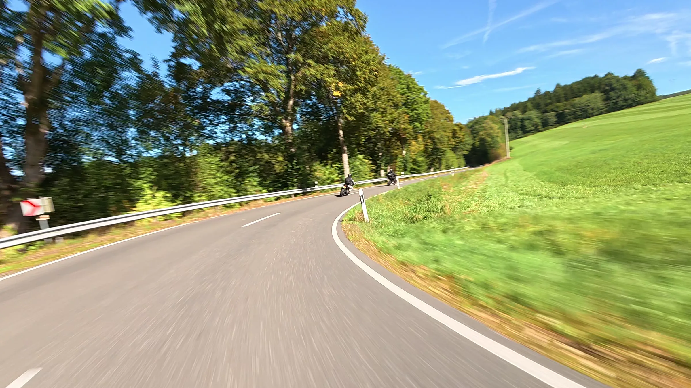
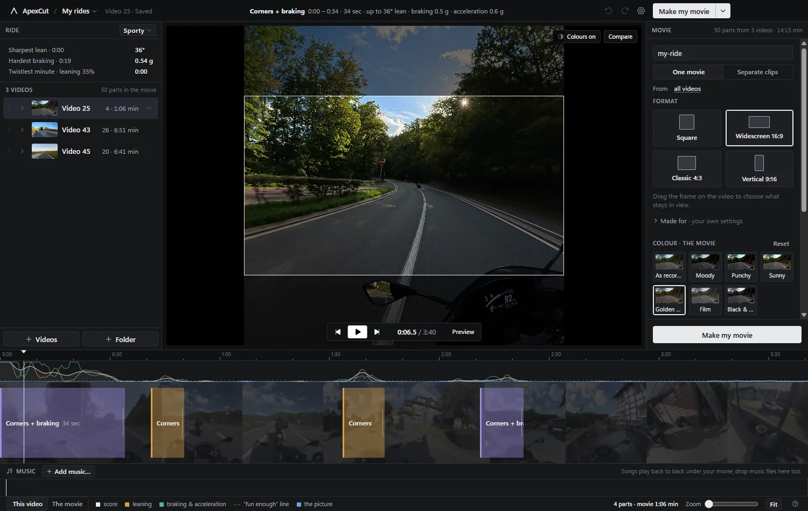
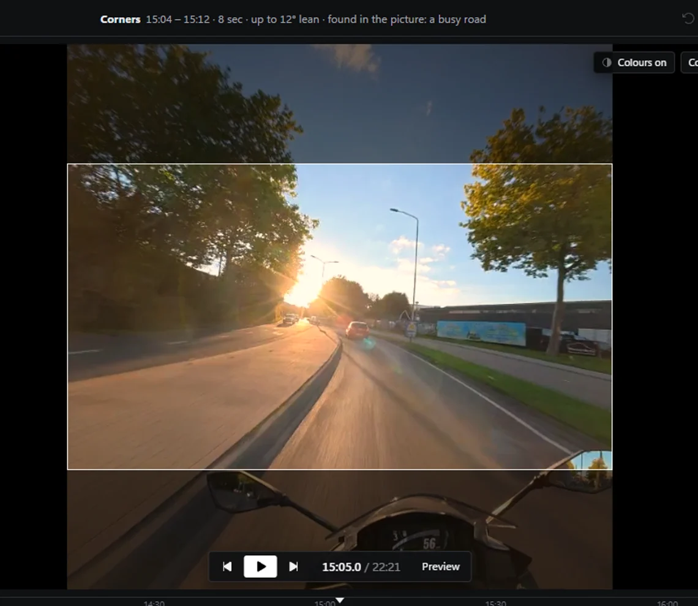
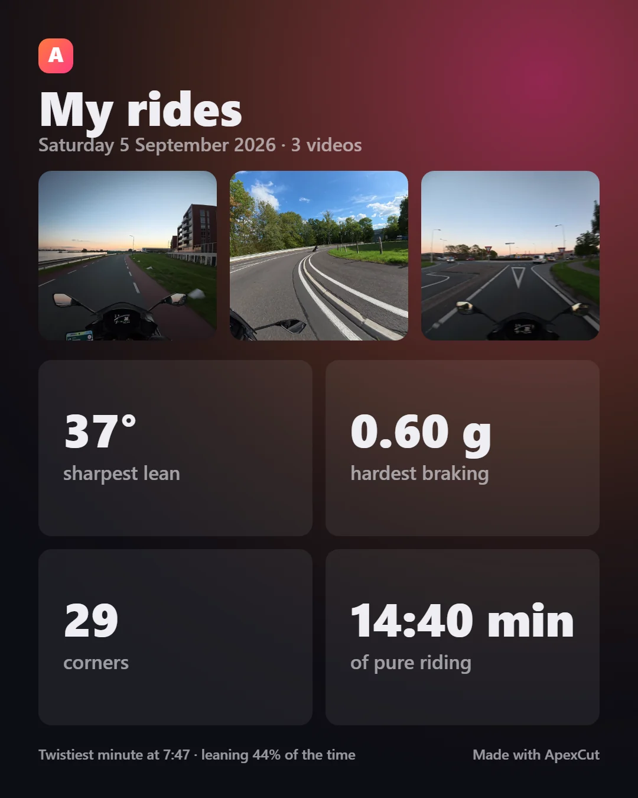
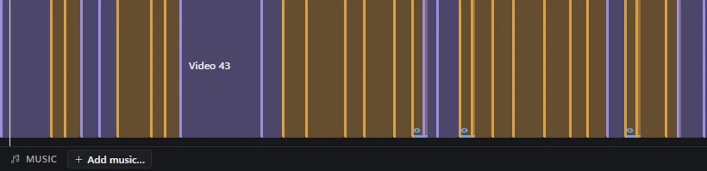
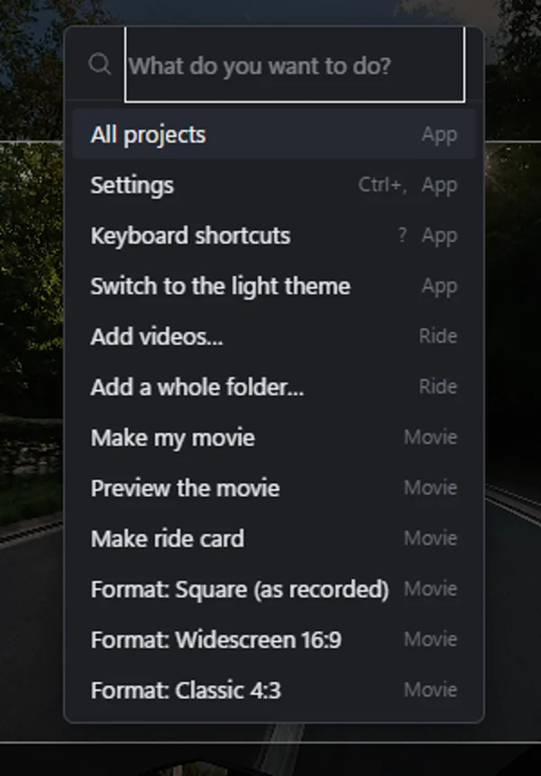

Drop the card in
Point ApexCut at a folder — the root of the memory card is fine. It finds the recordings, pairs each one with the small proxy the camera wrote next to it, and groups them by riding day.

Free · Windows · open source
Your helmet camera writes down how the bike moved, thirty times a second, in every recording. ApexCut reads it, finds the corners, the braking and the hard acceleration, and hands you a movie of the good bits. On your own computer, in about the time it takes to make coffee.
Version 1.4.1 · Windows 10 and 11, 64-bit · NVIDIA, Intel or AMD GPU for fast exports (a CPU fallback is built in) · MIT licensed

Fig 01 Three rides of one afternoon · 50 parts · a 14 minute movie
The idea
Scrubbing through two hours of footage to find the ten minutes worth keeping is the reason most rides never become anything. But the camera on your helmet has been recording lean, braking and acceleration the whole time — so the work is already done, it just needs reading.
—
Drag the slider: this is the actual score of a 22 minute evening ride and the parts the app would cut from it. The same slider sits in the app, under “How picky?”.
Point ApexCut at a folder — the root of the memory card is fine. It finds the recordings, pairs each one with the small proxy the camera wrote next to it, and groups them by riding day.
No footage is decoded: the motion track is copied out and scored on lean, sustained turning, and braking or acceleration near a corner. The 22 minute ride in the graph above took 1.2 seconds.
The parts land on a timeline you can actually edit. Change your mind, join two, leave one out, add music, then press one button and get an MP4 at full quality.
In the app
Everything is named after what it does to your ride. No bins, no nodes, no render queue — a timeline of the parts, a panel for the movie, and plain words on every button.
Blocks in the colour of what they are: leaning, braking and acceleration, or both. Drag an edge to keep more, press a key to leave one out, join a chain of corners into one long sweep. The curve above is the score; the dashed line is where “fun enough” starts.
Undo and redo everywhere. A change to the picks is never a change to your files.

Fig 02 Four parts out of 3 minutes 40 of forest road
Seven looks, each drawn on a frame of your own ride so you can see what you are picking. Fine-tune nine sliders if you want to. Drag the line across the picture to see exactly what changed — the left is as recorded, the right is what the movie gets.
The same maths runs in the preview and in the export, so what you see is what is written.
The camera films a square; the internet wants everything else. Pick widescreen for YouTube, vertical for Reels or a phone, 4:3 or the square as recorded — then drag the frame to say what stays in view. Nothing is ever scaled up or down: the crop is taken at full resolution.
Vertical can lean into the corners with you: the tall frame follows the turn and comes back on the straights.
Hold two fingers up to the camera while you ride and ApexCut keeps that spot: the ten seconds before your hand went up become a part of their own. Your marks are unmistakable, and nothing the app decides can push them out.
No hand model, no cloud: it looks for the shape a gloved hand makes in front of a wide-angle lens. Hold it up for about a second.

Fig 04 Four gestures, found and kept

Switch it on and the recording gets a say as well as the sensor: tunnels and underpasses, light changing fast, low evening sun, a road full of traffic. It only ever adds moments, and it says why it picked each one.

One click makes a ride card: your sharpest lean, hardest braking, how many corners and how long you were actually riding, with three frames from the day. Straight to the clipboard, ready to post.

When the movie is ready, “Send to my phone” shows a QR code. Point your camera at it and the movie plays on the phone, served by your own computer over your own Wi-Fi. Nothing is uploaded, and the link stops working after half an hour.

Switch the timeline to “The movie” and every part of every ride sits back to back in the order it will play, with the music lined up underneath. Drag one to move it in the movie.

Type what you want: open a ride, set a shape, pick a look, jump to a part, make the movie. The same things the buttons do, without hunting for them.

Relaxed, Sporty or Track, then a slider for fewer or more parts. Straight-line pulls, the picture’s vote and your own marks are switches — off until you want them.
Cameras
The camera stores its own attitude thirty times a second, next to the picture.
ApexCut reads it straight out — lean, turn rate, braking and acceleration — and uses
the small .LRF copy for smooth scrubbing.
GoPro writes an accelerometer and a gyroscope instead of an attitude, so ApexCut
works the attitude out itself. On a Hero8, which stores its own, the two agree
within a few degrees. Copy the .LRV file along for smooth scrubbing.
A recording with no motion track — a screen recording, an edited copy, a camera without sensors — says so plainly instead of pretending. You can still cut it by hand, but nothing will be found for you.
What comes out
A highlight tool that quietly ruins your footage is worth nothing. These are the rules ApexCut holds itself to, and they are tested on every release.
| Resolution | Never scaled. A format crops the recording at full resolution — 3840 × 2160 out of the square for widescreen, 2160 × 3840 for vertical. |
|---|---|
| Colour depth | 10-bit recordings stay 10-bit, all the way through the colour work. |
| The square format | Copied, not re-encoded: the exported parts are the original bytes, cut at the nearest keyframe. |
| Everything else | HEVC at CQ 18 on your GPU (NVENC, QuickSync or AMF), with libx265 as the fallback, and a bitrate cap that follows the pixels you kept. |
| Sound | The ride’s own sound, music under it if you added any, and an optional pass that makes every movie equally loud (−14 LUFS). |
| Your files | Read-only. Movies and clips land in a folder you choose; the recordings on the card are never written to. |
Questions
Yes. MIT licensed, source on GitHub, no account, no subscription, no telemetry. If it saves you an evening of scrubbing, tell another rider.
No. Scanning, editing and exporting all happen locally. The one thing that uses the network is “Send to my phone”, and that is your own computer serving one file to your own Wi-Fi for half an hour — nothing is uploaded anywhere.
Scanning reads the sensor track, not the pictures, so a twenty minute recording is done in seconds. Making the movie is the part that takes real time: a few minutes for a ten minute movie on a modern GPU, and the square format is a lossless copy, which is faster still.
Then you change them. Every part can be trimmed, joined, left out or deleted, and you can add your own anywhere. The presets and the fewer-or-more slider change how picky it is; two fingers to the camera marks a spot while you are still riding.
DJI Osmo Action, and GoPro Hero5 or newer. Both write the motion data ApexCut needs into every recording. Copy whole folders off the card so the small proxy files come with them.
Not yet. The app is built with Electron and nothing in it is Windows-only, so a build for other platforms is possible — it just has not been made and tested. The source is there if you want to try.
Download it, point it at a memory card, and see what your camera has been writing down all this time.
Installer or portable build · Windows 10 and 11 · updates itself when a new version lands